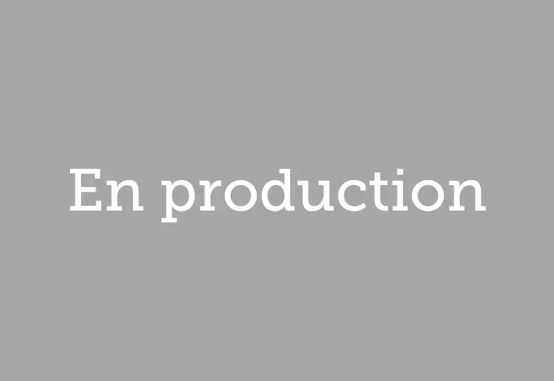

Clients de Nubart GUIDE dans le monde
229 projets 27 pays 5 continents
Nubart GUIDE est un audioguide par QR code qui fonctionne dans le navigateur du visiteur, sans application à télécharger. Des musées, châteaux, cathédrales, grottes touristiques, stades, campus universitaires, visites de ville et bateaux d’excursion dans 27 pays l’utilisent pour des visites libres. On y trouve notamment l’Albertina à Vienne, l’Alcázar de Ségovie, le Musée du FC Barcelone et l’Ohio State Reformatory. À bord des bateaux et des bus, l’audio peut se déclencher automatiquement par GPS avec Nubart MOTION. Plus de 70 % de ces clients ont également confié à Nubart la production du contenu de leur audioguide. Contactez-nous si vous avez besoin de références.
Pays
- Tous
- Allemagne
- Andorre
- Australie
- Autriche
- Belgique
- Bulgarie
- Chili
- Danemark
- Émirats arabes unis (Abou Dabi)
- Espagne
- États-Unis
- Finlande
- France
- Israël
- Italie
- Japon
- Luxembourg
- Monténégro
- Nouvelle-Zélande
- Pays-Bas
- Pérou
- Pologne
- Roumanie
- Royaume-Uni
- Slovénie
- Suisse
- Thaïlande
Type de site
- Tous
- Musée
- Château
- Église
- Visite de ville
- Toits et belvédères
- Sentiers et itinéraires
- Aquarium
- Campus
- Stade
- Mémoriaux et patrimoine
- Cimetière
- Bateaux et véhicules
- Grotte


Deutsches Literaturarchiv Marbach, Marbach
Exposition permanente · Allemagne

Illinois State University, Normal
Parcours audio · États-Unis

Matera City Tours, Matera
Visite en bus · Italie

Barkassen Ehlers, Hambourg
Sortie en bateau · Allemagne

Captain Cook Cruises, Sydney
Sortie en bateau · Australie
Ajuntament d'Alcúdia, Îles Baléares
Visite de ville · Espagne
Mallorca Sea Paradise, Porto Cristo
Sortie en bateau · Espagne
Sentier Pla de Maset, Tarragone
Sentier · Espagne

Mersey Ferries, Liverpool
Sortie en bateau · Royaume-Uni

Miniatuur Museum, Amsterdam
Exposition permanente · Pays-Bas

EXPO Cave Karst Museum, Postojna
Exposition permanente · Slovénie

Affordable Art Fair Battersea, Londres
Exposition temporaire · Royaume-Uni

Museo Padre Hurtado Memorial de la Solidaridad, Santiago du Chili
Exposition permanente · Chili
Giardino Flora Appenninica, Capracotta
Exposition permanente · Italie

Spiekeroog, Îles de la Frise-Orientale
Exposition permanente · Allemagne

Neopharm, Sofia
Exposition permanente · Bulgarie
Wien mal anders, Vienne
Visite de ville · Autriche

Château de Pfalzgrafenstein, Kaub
Exposition permanente · Allemagne

Musée historique régional, Bourgas
Exposition permanente · Bulgarie
Maison natale de Ringelnatz, Wurzen
Exposition permanente · Allemagne
Musée archéologique régional, Plovdiv
Exposition permanente · Bulgarie
Musée national de la littérature, Sofia
Exposition permanente · Bulgarie
Caesarea City Tour, Césarée
Visite de ville · Israël · Nubart GUIDE + GAME
Fine Arts Gallery de la Ferris State University, Michigan
Exposition permanente · États-Unis
Salou Tourist Guide, Salou
Visite de ville · Espagne
Jaciments arqueològics, Ibiza
Exposition permanente · Espagne
Mallorca Literària, Majorque
Exposition permanente · Espagne
Zona K Card, Milan
Exposition temporaire · Italie

Predjama Castle, Postojna
Exposition permanente · Slovénie

Schloss Hellbrunn, Salzbourg
Exposition permanente · Autriche

Giubileo 2025, Bologne
Exposition temporaire · Italie

Excursiones Menorca, Mahón
Excursion en bateau · Espagne

Hofstra University, Hempstead, NY
Visite du campus · États-Unis
Museum of The American Revolution, Philadelphia, PA
Exposition permanente · États-Unis

CCCB Amazonas, Barcelone
Exposition temporaire · Espagne

Coats Paisley, Royaume-Uni
Parcours audio · Royaume-Uni

45 Works From the BNB Art Collection, Bulgarie
Exposition temporaire · Bulgarie
Archiginnasio, Bologne
Exposition permanente · Italie

CCCB, exposition Agnès Varda, Barcelone
Exposition temporaire · Espagne
Underground Spaces of Rome, Rome
Parcours audio · Italie

Bilboats, Bilbao
Sortie en bateau · Espagne

MAXXI - Musée national de l'art du 21e siècle
Exposition permanente · Italie

Dry Dock Logistics
Parcours audio · Espagne

Franz von Stuck - Galerie nationale d'art, Sofia
Exposition temporaire · Bulgarie
Comarca Cinco Villas, Los Bañales
Parcours audio · Espagne

Parc du château de Putbus, Putbus
Exposition permanente · Allemagne

Las Golondrinas (Copa América), Barcelone
Sortie en bateau · Espagne

Comarca Cinco Villas, Luesia
Parcours audio · Espagne

Pazardzhik
Parcours audio · Bulgarie

Hristo Stoichkov Museum, Sofia
Exposition permanente · Bulgarie

Visite extérieure du champ de lavande, Villesèque
Parcours audio · France

Petach Tikva Rishonim Museum, Petach Tikva
Exposition permanente · Israël

Commune de Tauste, Comarca Cinco Villas, Zaragoza
Visite audio · Espagne

Biota Municipality, Comarca Cinco Villas, Zaragoza
Visite audio · Espagne
Uncastillo Municipality, Comarca Cinco Villas, Zaragoza
Visite audio · Espagne

Museu Casteller de Catalunya, Valls
Exposition permanente · Espagne

Musée folklorique, Kolbuszowa
Exposition permanente · Pologne

Kokelhus of Jan and Sjut, Earnewald
Exposition permanente · Pays-Bas

Conseil départemental Celanova, Orense
Parcours audio · Espagne

WKE - Concerts au château de Schönbrunn, Vienne
Audioguide · Autriche

Musée de la calèche, Rome
Exposition permanente · Italie
AI : Intelligence artificielle, CCCB, Barcelone
Exposition temporaire · Espagne

Osterville Village Library, Massachusetts
Visite audio · États-Unis

"Zlatyu Boyadzhiev", Galerie nationale d'art, Sofia
Exposition temporaire · Bulgarie
Musée Rakia
Exposition permanente · Bulgarie

Parc archéologique de Césarée, Caesarea
Exposition permanente · Israël · Nubart GUIDE + SYNC

Église évangélique de Bistrita, Bistrita
Exposition permanente · Roumanie

Hermannshöhle - grottes de stalagmites de Rübeland, Oberharz am Brocken
Exposition permanente · Allemagne

Musée Grifols, Barcelona
Exposition permanente · Espagne

Naval Heritage Collection Museum, Tivat
Exposition permanente · Monténégro

Hotel Krallerhof, Leogang
Événement · Autriche

Marquis de Sade - CCCB, Barcelona
Exposition temporaire · Espagne

Kardzhali Province, Kardzhali
Visite audio · Bulgarie

Smolyan Province, Smolyan
Visite audio · Bulgarie

Haskovo Province, Haskovo
Visite audio · Bulgarie

Musea Brugge, Bruges
Exposition permanente · Belgique · Nubart GUIDE + SYNC

Sádaba, Comarca Cinco Villas, Zaragoza
Visite de ville · Espagne

Collections municipales de Freital au château de Burgk, Freital
Audioguide · Allemagne · Nubart GUIDE + GAME

Besondere Orte Berlin, Berlin
Visite de ville · Allemagne

Barkassen Meyer Hamburg Boat Trip, Hamburg
Sortie en bateau · Allemagne

Sos del Rey Católico, Comarca Cinco Villas, Zaragoza
Parcours audio · Espagne
Arcipelago Campano Territorial, Naples
Parcours audio · Italie

El Torno Municipality, Cáceres
Audioguide · Espagne

Rebollar Municipality, Cáceres
Audioguide · Espagne

Piornal Municipality, Cáceres
Audioguide · Espagne

Cabezuela del Valle Municipality, Cáceres
Audioguide · Espagne

Palazzo Pepoli, Bologna
Audioguide · Italie

Palazzo Santa Maria, Bologna
Audioguide · Italie

San Colombano, Bologna
Audioguide · Italie

Palazzo Fava, Bologna
Audioguide · Italie

Cap San Diego, Hamburg
Navire-musée · Allemagne

Port of Humanity Tsuruga Museum, Tsuruga
Exposition permanente · Japon

Historic Rock Ford - Lancaster, PA
Visite audio · États-Unis

Ville de Hoyerswerda, château et camp de prisonniers de guerre, Saxe
Visite audio · Allemagne

Musée du bureau du quartier-maître, Ávila
Exposition permanente · Espagne

Casa Colorada, Santiago de Chile
Exposition permanente · Chili

Conseil municipal de Nogales, Badajoz
Parcours audio · Espagne

Harriet Beecher Stowe Center - Hartford, CT
Visite historique · États-Unis

Hundertwasser Art Center - Whangārei, Nouvelle-Zélande
Exposition permanente · Nouvelle-Zélande

Aumônerie urbaine et touristique de Worms - Diocèse de Mayence
Exposition permanente · Allemagne

The Barber Vintage Motorsports Museum - Birmingham, AL
Exposition permanente · États-Unis

Andorra Turisme, Andorra la Vella
Visite audio · Andorre

Chaldean Cultural Center - West Bloomfield, MI
Exposition permanente · États-Unis

Grotte Baumann - grottes de stalagmites du Rübeland, Oberharz am Brocken
Exposition permanente · Allemagne

Musée municipal d'Andernach, Rhénanie-Palatinat
Exposition permanente · Allemagne

Around Tahoe Tours - Incline Village, NV
Visite audio · États-Unis

Museo de los Fideos Franz Tress, Münsingen
Exposition permanente · Allemagne

Cervell(s) - CCCB, Barcelone
Exposition temporaire · Espagne

Las Golondrinas, Barcelona
Excursion en bateau · Espagne

Museo de la minería, Brand-Erbisdorf
Exposition permanente · Allemagne

MUSME (Museo de Historia de la Medicina de Padua), Padua
Exposition permanente · Italie

KUNSTHAUS : KOLLITSCH, Klagenfurt
Audioguide · Autriche

Évêché d'Osma-Soria
Parcours audio · Espagne

Municipalités de Valle del Jerte, Estrémadure
Parcours audio · Espagne

REG Vetschau, Spreewald, Brandebourg
Parcours audio · Allemagne

Catamarans de la baie de Cadix, Puerto de Santa Maria, Cádiz
Sortie en bateau · Espagne

Formae Lucis, Diocèse d'Albenga
Exposition temporaire · Italie

Château de Detmold, Rhénanie-du-Nord-Westphalie
Exposition permanente · Allemagne

Holiday Lines - Minorque, îles Baléares
Sortie en bateau · Espagne

Panagyurishte, Provincia de Pazardzhik
Visite de ville · Bulgarie

Musée de l'espéranto, Bibliothèque nationale d'Autriche, Vienne
Exposition permanente · Autriche

Musée naval - Barco de la Virgen - Santa Cruz de La Palma, Îles Canaries
Exposition permanente · Espagne

Bodegas El Grifo - Lanzarote, îles Canaries
Exposition permanente · Espagne
Itinéraire de découverte en famille - Sant Cugat del Vallès
Parcours audio · Espagne

Le masque ne ment jamais - CCCB - Barcelone
Exposition temporaire · Espagne

Gabriel Ferrater - Museu de Sant Cugat - Sant Cugat del Vallès
Exposition temporaire · Espagne

Musée néerlandais de la franc-maçonnerie - La Haye
Exposition permanente · Pays-Bas

Ohio State Reformatory - Mansfield, OH
Exposition permanente · États-Unis · Nubart GUIDE + GAME

Musée polonais de l'aviation - Cracovie
Exposition permanente · Pologne

City Tour Altenberg
Visite de ville · Allemagne

City Museum Pulsnitz
Exposition permanente · Allemagne

Musée de l'île de Poel
Exposition permanente · Allemagne

Tsari Mali Grad
Parcours audio · Bulgarie

MS Artville - Hamburg
Exposition temporaire · Allemagne

Diocèse d'Albenga
Exposition permanente · Italie

Pro Loco Bolsena
Visite de ville · Italie

Chavdar
Parcours audio · Bulgarie

Samokov
Parcours audio · Bulgarie

St Helen, OR
Marketing territorial · États-Unis

Memorial Stalag VIII - Görlitz
Exposition permanente · Allemagne

Txibilikoi - Brai, San Sebastian
Excursion en bateau · Espagne

Musée du Globe - Bibliothèque nationale d'Autriche, Vienne
Exposition permanente · Autriche

Musée de la brasserie Mönchshof
Exposition permanente · Allemagne

University of Gloucestershire
Visite du campus · Royaume-Uni

Musée Casa Botines - León
Exposition permanente · Espagne

Semana Santa Marinera - Valence
Exposition permanente · Espagne

Bad Münstereifel
Marketing territorial · Allemagne

Îles Féroé
Parcours audio · Danemark

Science Friction - CCCB, Barcelone
Exposition temporaire · Espagne

De Thomas - Amsterdam
Exposition permanente · Pays-Bas

Musée Straats - Amsterdam
Exposition permanente · Pays-Bas

Visit Baden
Exposition permanente · Autriche

Pravets
Exposition permanente · Bulgarie

Musée de la préhistoire de Blaubeuren
Exposition permanente · Allemagne

Mars, le miroir rouge - CCCB, Barcelone
Exposition temporaire · Espagne

Centre d'histoire militaire - Broken Arrow, OK
Exposition permanente · États-Unis

Musée des papyrus - Bibliothèque nationale d'Autriche, Vienne
Exposition permanente · Autriche

Institut Hindemith - Francfort
Exposition permanente · Allemagne

Musée des Vaudois - Ötisheim
Exposition permanente · Allemagne

Enormes ! Mer du Nord - Musée Nordfriesland
Exposition temporaire · Allemagne

Musée du vin - Arnhem
Exposition permanente · Pays-Bas

Central Washington Agricultural Museum - Union Gap, WA
Exposition permanente · États-Unis

Musée Mittelrhein - Coblence
Exposition permanente · Allemagne

Monastère de Sant Cugat - Barcelone
Exposition permanente · Espagne

Plus que des abeilles - Musée des sciences, Barcelone
Exposition temporaire · Espagne

Bahnhof Zoo - Querstadtein, Berlin
Visite de ville · Allemagne

Musée de la machine-outil - Elgoibar
Exposition permanente · Espagne

Bellver de Cerdagne
Exposition permanente · Espagne

Maison de Victor Hugo - Vianden
Exposition permanente · Luxembourg

Musée de la pêche - Palamós
Exposition permanente · Espagne · Nubart GUIDE + LIVE

Biotechnologique Botanique - Ibiza
Exposition permanente · Espagne

Grote Kerk - Naarden
Exposition permanente · Pays-Bas

Museum Angewandte Kunst - Frankfurt
Exposition permanente · Allemagne

Complexe muséal Hel
Exposition permanente · Pologne

Musée du design - Barcelone
Exposition permanente · Espagne

WeeGee Center - Espoo
Exposition permanente · Finlande

Île de Bled - Musée national de Slovénie, Ljubljana
Exposition permanente · Slovénie

Quartier de Barranco - Lima
Parcours audio · Pérou

Parc minier Riotinto - Huelva
Exposition permanente · Espagne

Albertina Modern - Vienne
Exposition temporaire · Autriche

Temples et lieux saints - Bangkok
Parcours audio · Thaïlande

Château de San Marcos - Cadix
Exposition permanente · Espagne

Musée du Royaume de Grenade - Grenade
Exposition permanente · Espagne

Gadäwäg - Klosters Davos
Visite en plein air · Suisse

Desert Island - Abu Dhabi
Tour de l’île · Émirats arabes unis

Musée ethnographique - Ibiza
Exposition permanente · Espagne

Alcazaba et Gibralfaro - Malaga
Exposition permanente · Espagne

Musée municipal de Llívia
Exposition permanente · Espagne

Forteresse Ehrenbreitstein - Coblence
Exposition permanente · Allemagne

Parc naturel de Chiloé
Exposition permanente · Chili

Stanley Kubrick - CCCB, Barcelone
Exposition temporaire · Espagne

Cathédrale - Burgo de Osma
Exposition permanente · Espagne

Gameplay - CCCB, Barcelone
Exposition permanente · Espagne

Château de Vianden
Exposition permanente · Luxembourg

The Best of Amsterdam
Visite de ville · Pays-Bas

Steinzeitpark Dithmarschen
Exposition permanente · Allemagne

Carácter Pop - Museo de la Nación, Lima
Exposition temporaire · Pérou

Contemporary Muslim Fashions - Museum Angewandte Kunst, Francfort
Exposition temporaire · Allemagne

Musée Can Prunera - Majorque
Exposition permanente · Espagne

Black Light - CCCB, Barcelone
Exposition temporaire · Espagne

Dinosfera - Coll de Nargó
Exposition permanente · Espagne

Fundació Mas Miró - Montroig
Exposition permanente · Espagne · Nubart GUIDE + GAME

Museu Faller - Valence
Exposition permanente · Espagne

Nexo Turismo y Cultura
Monuments naturels d’El Maestrazgo · Espagne

Holmegaard Vaerk
Exposition permanente · Danemark

Espacio Fundación Telefónica - Madrid
Exposition permanente · Espagne

Chávez - Museo de la Nación, Lima
Exposition temporaire · Pérou

Fundació Tàpies - Barcelona
Exposition permanente · Espagne

Musée Thermalia - Caldes de Montbui
Exposition permanente · Espagne

Johan Cruijff ArenA - Amsterdam
Exposition permanente · Pays-Bas

1000 m2 de Désir - CCCB, Barcelone
Exposition temporaire · Espagne

La machine à penser: Ramon Llull - CCCB, Barcelone
Exposition permanente · Espagne